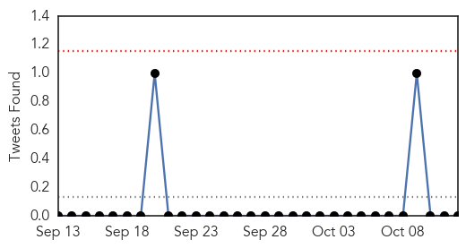

Dengue Fever
30-Day Web Trend
12 alerts, 15 warnings

30-Day Twitter Trend
0 alerts, 0 warnings

Article Locations

Article Confidences

Top Articles:
- 0.997
- Dengue virus ′endemic′ in China, say researchers
- 0.996
- Dengue cases in Delhi breach 10,000 mark, 30 deaths confirmed
- 0.994
- Swineflu case surfaces in Ludhiana, puts authorities into tizzy
- 0.994
- Comprehensive genomic study provides evidence that dengue has become endemic and diverse in China
- 0.993
- Neglected tropical diseases taking hold in U.S.
- 0.990
- Comprehensive genomic study provides evidence that dengue has become endemic and diverse in China
- 0.989
- DOH: Dengue cases rise four times this year - Philippines
- 0.989
- DOH: Dengue cases rise four times this year
- 0.988
- Panic in Kotwa as dengue scare continues unabated
- 0.986
- 3,077 fresh dengue cases in last 1 week; total crosses 10,000 mark
- 0.985
- Panic in Kotwa as dengue scare continues unabated
- 0.960
- Multan expects decline in dengue cases
- 0.895
- Dengue treatment costs a bomb
- 0.796
- Why Your Dog Can Get Vaccinated Against Lyme Disease And You Can’t
- 0.674
- Plan to honeytrap dengue mosquitoes
- 0.666
- 30 diseases that Columbus introduced to the Americas
- 0.659
- Doctors plan global day of climate action « nuclear-news
- 0.572
- City residents vulnerable to threat of dengue
- 0.563
- 30 terrible diseases Christopher Columbus brought to the New World
Top Tweets:
-
No tweets found for Oct 12, 2015
Ebola
30-Day Web Trend
1 alerts, 0 warnings

30-Day Twitter Trend
1 alerts, 0 warnings

Article Locations
Article Confidences

Top Articles:
- 1.000
- 80 People Being Monitored in Dallas Ebola Case
- 1.000
- Response in Sierra Leone to Ebola Outbreak Saved 40,000 Lives
- 0.999
- Scottish Nurse Who Recovered From Ebola Is Back In Isolation
- 0.998
- Nigeria Ebola Scare: Government resolves cases
- 0.997
- Ebola vaccine trial underway in Sierra Leone
- 0.997
- Close contacts of British Ebola nurse monitored
- 0.993
- ‘I Felt Privileged’: Journalist Decries MSF Over EVD Treatment
- 0.989
- Pauline Cafferkey: 58 close contacts of Ebola nurse being monitored
- 0.989
- Ebola-infected nurse Pauline Cafferkey's family and friends given unlicensed vaccine after her relapse
- 0.989
- Dozens of friends of Pauline Cafferkey are given an unlicensed Ebola vaccine after nurse's relapse
- 0.987
- 58 Monitored For Deadly Virus
- 0.981
- VSO Disseminates Research Findings Report of Impact of Ebola Virus Disease on Delivery of Routine Maternal Health Services
- 0.981
- Ebola nurse's close contacts identified
- 0.981
- Ebola: Scottish nurse Pauline Cafferkey back in isolation
- 0.979
- El Niño predictions signal urgent need to prepare for epidemic in eastern Africa
- 0.976
- Friends and family of Pauline Cafferkey given the Ebola vaccine
- 0.973
- Johnson & Johnson begins clinical trial of Ebola vaccine regimen in Sierra Leone
- 0.960
- Ebola Resurgence: ABC Secretariat stems the tide
- 0.907
- Celebrating NTD Success Stories: Good News from Haiti
- 0.869
- Global experts warn of emerging threats
- 0.856
- Reports of Ebola Outbreak in Calabar are Untrue
- 0.815
- German health minister opens World Health Summit in Berlin
- 0.814
- ReSurge Africa team visit Sierra Leone project – September 2015 « News
- 0.798
- German health minister opens World Health Summit in Berlin
- 0.762
- Sister of Ebola nurse attacks ‘diabolical’ quality of treatment
- 0.729
- Tu Youyou's Nobel Prize promotes China-Africa health cooperation
- 0.700
- In post-Ebola Sierra Leone, aid is needed, but not all is helpful
- 0.699
- ALICOR President: Gov’t Did Not Appreciate Community Radios
- 0.663
- Nurse Pauline Cafferkey still in 'serious' condition as she is treated for ebola at Royal Free for second time
- 0.612
- Researchers: IOM recommendations could have altered course of Texas Ebola case
- 0.531
- International Day of the Girl Child : UNICEF announce new education initiative for 3,000 teenage pregnant girls
Top Tweets:
- 0.798
- Ebola toll in Sierra Leone 'could have been halved if UK had acted earlier' - The Guardian http://t.co/AWRHH27JZ8 ebola EVD
- 0.726
- RT: SierraLeone Ebola virus disease cases at a standstill (green) but medically similar disease still rising (pink) http://t.co…
- 0.707
- In post-Ebola Sierra Leone aid is needed but not all is helpful - Christian Science Monitor http://t.co/h8EAEeLntK ebola EVD
- 0.600
- New compound found to cure Ebola in monkeys - Medical News Today http://t.co/epMsVeBYiu ebola EVD
- 0.594
- Fifteen Ebola Suspects Released From Quarantine As Nigerian Government Denies ... - Tech Times http://t.co/1Q27ZFIop3 ebola EVD
- 0.541
- Ebola Resurgence: ABC Secretariat stems the tide - Sierra Express Media http://t.co/txTHjbZhWm ebola EVD
- 0.532
- Ebola: One Year Later - Medscape http://t.co/SG5h1p73N9 ebola EVD